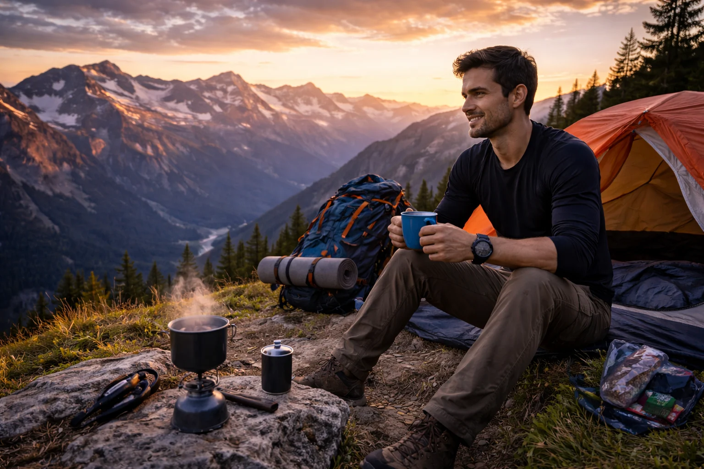

TREK GUIDE
Sunrise treks are among the most memorable trekking experiences. Watching the first light of the day from a mountain summit makes every step of the climb worth it.
A sunrise trek is a trekking experience where hikers start their journey early in the morning — often before dawn — with the goal of reaching the summit just in time to watch the sunrise. These treks usually begin in darkness or early twilight and end with one of the most beautiful sights in nature: the sun rising over mountains, valleys, or forests.
Sunrise treks have become extremely popular among trekkers because they combine adventure, peaceful nature, and stunning views. Walking through quiet trails while the world slowly wakes up creates a unique atmosphere that is very different from daytime trekking.
The reward for waking up early and trekking uphill is often an unforgettable moment at the summit. As the sky slowly changes colors and sunlight spreads across the landscape, the entire scene feels magical.
For many people, watching the sunrise after a trek becomes one of their most memorable outdoor experiences.
Sunrise treks offer a combination of adventure and beauty that makes them especially appealing for both beginners and experienced trekkers.
Many trekkers say that the calm atmosphere of early morning makes the entire experience feel more relaxing. The silence of the mountains, combined with fresh morning air, creates a special connection with nature.

Reaching the summit just before sunrise is one of the highlights of many treks.
Because sunrise treks usually begin very early in the morning, preparation plays an important role in making the experience comfortable and safe.
Planning your start time is especially important. Most trekkers calculate how long the trail takes and begin their trek early enough to reach the viewpoint just before sunrise.
Since sunrise treks often begin before daylight, following basic safety practices can help ensure a smooth experience.
Moving slowly and carefully during darker sections of the trail is important. Once the sun rises, visibility improves and the rest of the trek becomes much easier.
Reaching the summit just before sunrise is often the most memorable part of the entire trek. The sky slowly changes colors — from deep blue to shades of orange, pink, and gold — as the sun rises above the horizon.
From the top of a hill or mountain, the view can feel incredibly peaceful. Valleys begin to glow with morning light, distant peaks become visible, and the landscape slowly wakes up.
After spending hours walking in the cool early morning air, watching the sunrise feels like a well-earned reward. Many trekkers take this time to relax, enjoy the view, take photos, and simply appreciate the beauty of nature.
Once the sun is fully up, the descent usually feels easier and more relaxed, making the entire trek a refreshing start to the day.
If you're planning your first sunrise trek, choose a well-known trail that is popular among trekkers. These routes are usually easier to navigate in the early morning and often have beautiful viewpoints designed for watching the sunrise.
Join the Mototrek community and explore beautiful trails with experienced trek leaders.
VIEW UPCOMING TREKS